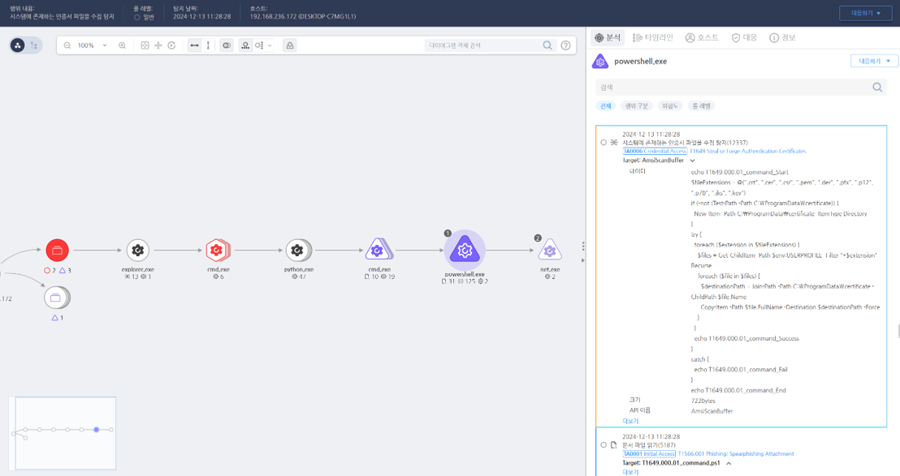

T1649.000.01 인증서 파일 수집
D3FEND
MITRE ATT&CK 액션을 기준으로 대응 방안을 작성
Detection
- process_name:powershell.exe AND
- Action : AmsiScanData AND
- AmsiScanBuffer : ".crt" OR ".cer" OR ".csr" OR ".pem" OR ".der" OR ".pfx" OR ".p12" OR ".p7b" OR ".jks" OR ".key" AND
- AmsiScanBuffer : "Get-ChildItem -Path $env:USERPROFILE
- AmsiScanBuffer : "-Recurse"
- AmsiScanBuffer : "Copy-Item" OR "foreach"
Detection(EDR)

Response
- 이벤트 분석
- 인증서 파일 접근 로그 및 관련 파일의 변경 기록을 확인.
- 비정상적인 파일 액세스 패턴이나 파일 유출 시도를 분석.
- 격리 및 조사
- 의심스러운 프로세스나 계정을 확인하고 해당 계정의 권한을 제한.
- 인증서 파일에 접근한 도구 및 명령을 분석하여 악성코드 여부를 판별.
- 정보 차단
- 민감한 인증서 파일에 대한 접근을 차단하고 암호화된 저장소로 이동.
- 네트워크를 통해 전송되는 인증서 관련 파일을 모니터링하고 DLP 솔루션으로 차단.
Mitigations
- 시스템 하드닝
- 인증서 파일은 최소 권한으로 접근 가능하도록 설정하고, 반드시 암호화하여 저장.
- 인증서 파일의 자동 백업 및 복구 계획을 강화.
- 접근 통제
- 인증서 파일 접근이 필요한 계정을 엄격히 제한하고 2단계 인증 적용.
- 파일 접근 권한 변경 시 관리자 승인을 요구하도록 설정.
- 모니터링 및 탐지
- 인증서 파일의 비정상적인 접근 및 복사를 탐지하기 위해 SIEM 솔루션을 설정.
- 파일 시스템 변경 및 접근 로그를 정기적으로 모니터링.
Affected Techniques
Action 실행시 함께 영향을 받는 다른 Techniqes
| D3FEND |
| D3-FC File Carving |